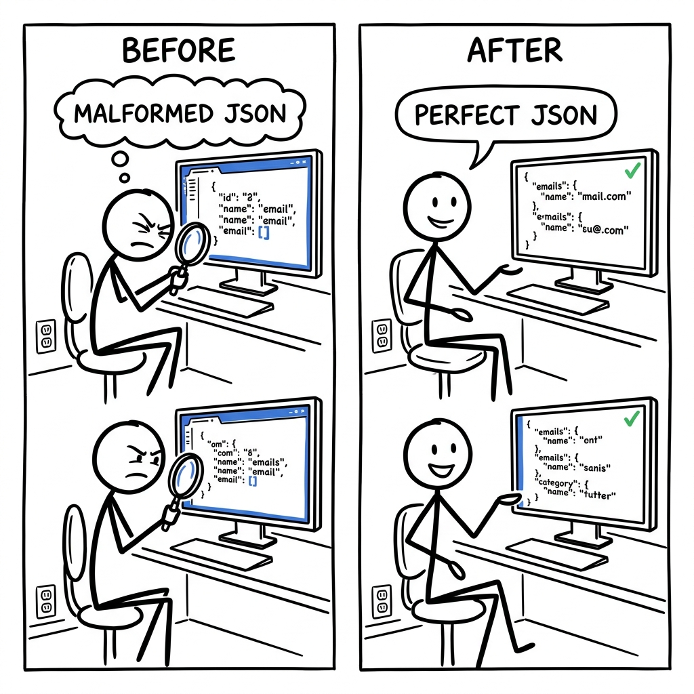

Sarah, a customer support manager, wants AI to categorize urgent emails for fast routing, but the model constantly spits out malformed JSON—a missing bracket, a typo in a category. Her current solution is a manual game of 'spot the error' in a text editor or a Python script with more try-except blocks than actual logic.

The trade it makes versus the dominant alternative.
What it gives up
- Outlines does not have its own flagship LLM, relying instead on others' models (local or API).
- It requires users to manage their own infrastructure (e.g., GPUs, model dependencies) when using local models.
- It might have a steeper initial learning curve for basic text generation compared to simple 'generate text' API calls.
- It cannot guarantee structured output for all API models, only those that expose sufficient control or through its own
dottxtAPI.
What it gets in return
- Outlines provides guaranteed structural correctness for local models, drastically reducing the need for unreliable post-processing and retry logic.
- It enables significant cost savings by allowing users to run structured generation on local or self-hosted models, avoiding expensive per-token API fees.
- It offers flexibility and vendor independence, allowing users to switch models or providers without rewriting their core structured output logic.
- Advanced users gain greater control and customization options, such as defining custom grammars or logits processors.
- Its open-source nature provides full transparency and auditability of the structured generation process.
OpenAI's dominant business model relies on a proprietary, black-box API with per-token pricing for its powerful LLMs. To copy Outlines' core strength—open-source, local-first structured generation with direct token-level control—OpenAI would need to open-source its frontier models, provide software for local execution with logit access, and fundamentally shift its competitive advantage from a service provider to a library provider. This would directly cannibalize its highly profitable API revenue and expose its core intellectual property, effectively destroying its existing business. Their current structured output features are tightly coupled to their closed API, not designed for open, vendor-agnostic control.
flowchart LR A["OpenAI's Closed API"] --> B["Drives High Revenue"] B --> C["Cannot Offer Open Local Control"] C --> D["Outlines: Open Local Control"]
Four dimensions that actually split the field.
- Output check time: When the library makes sure the output matches the desired structure.
- Supports local LLMs: Can run with models downloaded to your computer without paying a per-token API fee.
- Source code open: Is the code that performs the core structured generation publicly available to read and change?
- Structure definition: How you describe the output format you want.
| Product | Output check time | Supports local LLMs | Source code open | Structure definition |
|---|---|---|---|---|
| Outlines | During generationMasks invalid tokens at each step, preventing incorrect outputs from ever being generated for local models (using FSMs, outlines/backends/*), and leverages native API capabilities for black-box models. | FullIntegrates directly with HuggingFace transformers, llama.cpp, and MLX-LM to enforce structured generation on user-managed hardware. | OpenThe entire library, including core Finite State Machine (FSM) logic, is open-source under the Apache 2.0 license. | Python types, Regex, CFGUses standard Python types (Literal, Enum, Pydantic models, list, dict), regular expressions, or Context-Free Grammars as direct inputs to define the desired output structure. |
| Guidance | During generationDirectly controls the token generation process for local models by masking invalid tokens based on the specified structure. | FullPrimarily designed for local HuggingFace transformers models, allowing direct control over the generation process. | OpenThe library is open-source under the MIT license, allowing full inspection and modification. | Handlebars syntaxDefines output structure and control flow using a custom 'handlebars' templating language integrated into prompts. |
| OpenAI API (native) | During generationThe API itself handles the constraint enforcement on the server side, ensuring generated tokens conform to the specified response_format='json_object' or tool call schema. | NoneThis is an API-only cloud service; it does not run models locally on user hardware. | ClosedThe underlying LLM models and their structured generation mechanisms are proprietary and not publicly accessible. | JSON Schema, tool callsRequires defining output using JSON Schema (for response_format='json_object') or OpenAPI-like function definitions for tool calling. |
| Instructor | After generationGenerates output, then parses it with Pydantic; if validation fails, it provides feedback to the model and retries, looping until valid output is produced. | NoneIt wraps API calls (primarily OpenAI's) and does not directly execute or constrain local LLMs. | OpenThe Python library is open-source under the MIT license. | Python types (Pydantic)Relies heavily on Pydantic models to define expected output structures, automatically generating prompts with schema instructions. |
Features hiding in the codebase that the README doesn't advertise. Each one is a bet about where the product is going.
- 1Persistent Caching for LLM Callssrc/outlines/caching.py (Cache, CloudpickleDisk, get_cache)The product is betting on operational efficiency for production systems where repeated LLM calls can be expensive or slow, prioritizing performance and cost reduction.
- 2Pluggable Constraint Backendssrc/outlines/backends/init.py (LLGuidanceBackend, OutlinesCoreBackend, XGrammarBackend)This strategy offers multiple highly optimized ways to enforce structured outputs, allowing Outlines to adapt to evolving research in efficient token masking and support diverse model architectures without being locked into a single implementation.
- 3Extensive Multimodal Input Supportsrc/outlines/inputs.py (Image, Video, Audio, Chat), src/outlines/models/transformers.py (TransformersMultiModal)Outlines is positioned for the future of multimodal LLMs. The detailed support for various media types across multiple model integrations suggests a belief that multimodal inputs will become central to many structured generation tasks.
- 4Domain-Specific Type Definitionssrc/outlines/types/airports.py (IATA Enum), src/outlines/types/countries.py (Alpha2, Alpha3, Numeric, Name, Flag Enums), src/outlines/types/locale/us.py (zip_code, phone_number Regex)By providing out-of-the-box support for precise, validated data formats, Outlines targets specific verticals (e.g., travel, logistics, government) where high-precision data extraction is critical, hinting at future domain-specific solutions.
- 5Python-native Regex DSL with Pydantic Integrationsrc/outlines/types/dsl.py (Term hierarchy, python_types_to_terms, to_regex), src/outlines/types/init.py (pre-defined Regex types like uuid4, ipv4, semver)Outlines prioritizes developer experience for complex constraint definition. By enabling developers to compose structured types using Pythonic constructs, it lowers the barrier to entry for highly precise output control, fostering broader adoption.
- 6Normalized API Error Handlingsrc/outlines/exceptions.py (APIError hierarchy, normalize_provider_errors context manager)This robust error handling abstracts away vendor-specific API failure modes, providing a consistent, actionable interface for developers to build resilient applications. This minimizes the operational burden of managing diverse vendor APIs in production.
Features every competitor ships that this codebase deliberately doesn't. Strategy is choosing what not to do.
- 1No Integrated RAG/Vector DatabaseNo dedicated 'vector_db' or 'retrieval' modules, no imports for common vector database clients like Chroma or Pinecone.Outlines stays lean and focused exclusively on generation-time control. This avoids the complexity, cost, and operational burden of managing external knowledge bases and retrieval systems, but requires users to integrate a separate RAG solution for knowledge-intensive tasks.
- 2No Built-in UI or Analytics DashboardOnly Google Analytics for documentation (
mkdocs.yml), no 'dashboards', 'metrics', or 'logs_viewer' modules or associated web framework dependencies.The product maintains a developer-tool library focus, prioritizing programmatic control and integration flexibility. This avoids the significant effort of building and maintaining a web-based UI and operational dashboards, but enterprises might need to build custom monitoring around Outlines integrations. - 3No Direct Fine-tuning or Model TrainingRelease notes explicitly state 'The
load_loramethods...have been deprecated' and delegates to upstream model libraries; no 'trainer' or 'finetune' modules are present.Outlines focuses on inference-time structured generation. It delegates the complex and resource-intensive task of model training and fine-tuning to specialized libraries, limiting customization for users who require model-level behavioral changes. - 4No User Authentication or Multi-tenancyNo 'User', 'Tenant', or 'Auth' models/tables, nor any standard authentication or authorization libraries (e.g., Flask-Login, Django-Auth) within the codebase.Operating purely as a library avoids the substantial overhead of a multi-user SaaS platform, including user management, access control, and billing infrastructure. However, organizations requiring these features for centralized control must build or integrate them externally.
- 5No High-Level Agent Orchestration FrameworkAn 'examples/react_agent.md' exists, but the core library lacks a comprehensive framework (like LangChain or LlamaIndex) for complex reasoning loops or tool orchestration beyond providing structured output for function calls.The library maintains a modular design focused on its core strength of structured generation, avoiding the opinionated design choices and rapidly evolving complexity of a full-stack agent framework. Users building complex autonomous agents must integrate Outlines with another agent library.
- 6No Built-in Content ModerationError handling for OpenAI models (
openai.py) includes checking formessage.refusalbut there are no custom 'moderation_filter' or 'safety_check' modules, indicating reliance on upstream models.Outlines delegates the complex, sensitive, and constantly evolving challenge of content moderation to underlying LLM providers or dedicated third-party services. This avoids the significant ethical, legal, and engineering burden of maintaining its own safety systems, but users are entirely reliant on external mechanisms.